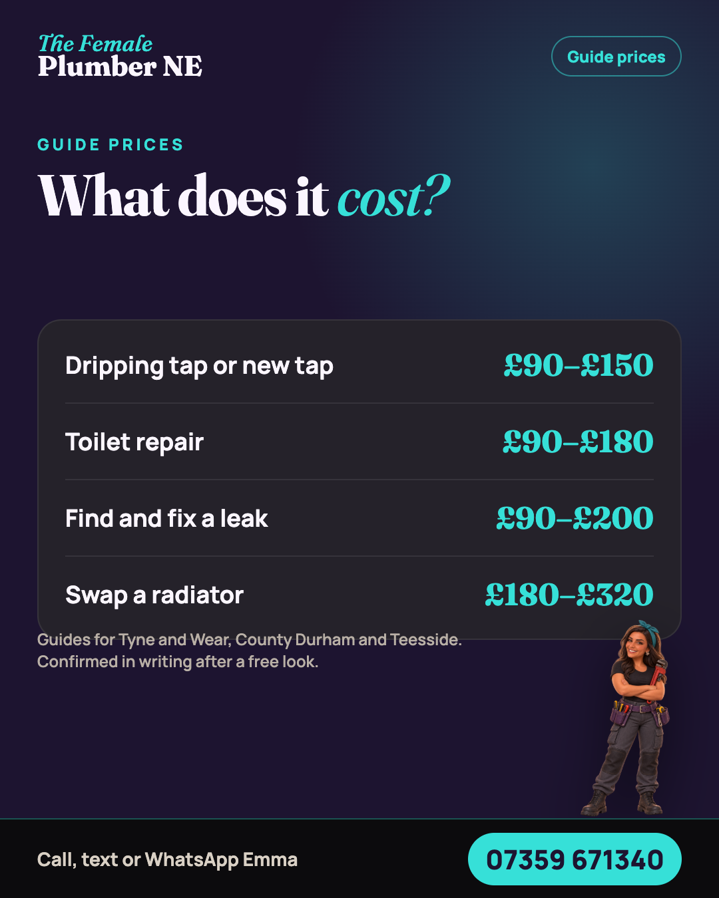

Hi, I'm Emma! Every job deserves a woman's touch. The Female Plumber NE, covering Tyne and Wear, County Durham and Teesside. 📞 Call, text or WhatsApp Emma on 07359 671340. #Hartlepool #Plumber

What does it actually cost? 💸 • Dripping tap or new tap: £90–£150 • Toilet repair: £90–£180 • Find and fix a leak: £90–£200 • Swap a radiator: £180–£320 Guides for Tyne and Wear, County Durham and Teesside. Your price is fixed in writing after a free look. 📞 Call, text or WhatsApp Emma on 07359 671340. #Hartlepool #Plumber
The numbers 👇 • 18 five-star reviews • 1k Facebook followers • 2006 on the tools since Thank you to everyone who's trusted me. 📞 Call, text or WhatsApp Emma on 07359 671340. #Hartlepool #Plumber
What's driving you mad? 👇 A · Dripping tap B · Slow drain C · Cold radiator D · Wobbly toilet Comment your letter! 📞 Call, text or WhatsApp Emma on 07359 671340. #Hartlepool #Plumber
What I do 👇 • Leaks and drips • Taps, toilets and sinks • Radiators • Cloakrooms • Bathroom refits • Commercial jobs No job too small. Send a photo and get a guide price back. 📞 Call, text or WhatsApp Emma on 07359 671340. #Hartlepool #Plumber
Got a job in mind? 📸 Send me a photo and get a guide price back. Free, and no pressure. 📞 Call, text or WhatsApp Emma on 07359 671340. #Hartlepool #Plumber